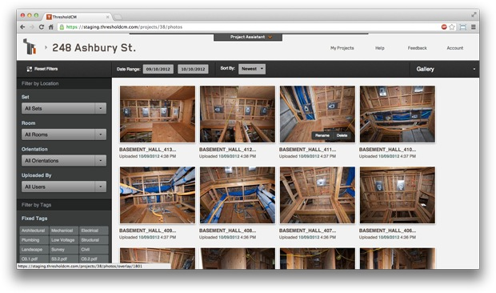
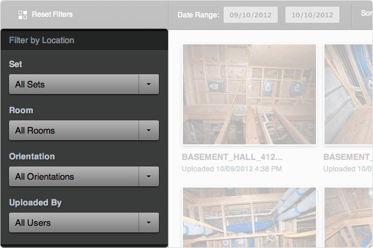
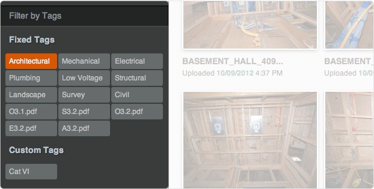
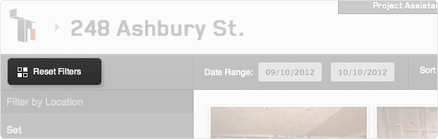

Gallery View
Gallery View allows you to search your photos by every metric available on the site.
Filtering
Filtering allows you to "stack" your searchable metrics to drill down even further. An example of this would be searching for a photo taken on a specific date, by a specific person, in a specific location, and with a custom tag. There's no limit to the number of filters you apply.
Filter by Location
To find photos associated with a specific location use the dropdowns to select the set, room, and orientation of the desired location. Once a location has been selected, you can use tags to continue filtering the photos.
Additionally, you can search by Uploaded By to find photos uploaded by specific people.
Filter by Tags
To filter by a tag just click on it. When you click on multiple tags, you will only see photos that contain all of the selected tags. For example, if you select two tags, such as Architectural and Electrical, you will only see photos that have both of those tags associated with it. You can assign multiple tags in the Photo Viewer.
Filter by Date Range
In addition to filtering by location and tags, you can also filter by date range. Enter the date(s) of the photo you are searching for in the date range boxes. All photos uploaded between the two dates will be displayed.
Reset Filters
To remove previously entered search criteria, you can hit the Reset Filters button. This will revert all filters and show all of your project photos.
